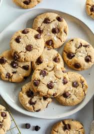

Chocolate Chip Cookies

Description
This is best chocolate chip cookies recipe ever! No funny ingredients, no chilling time, etc. Just a simple, straightforward, amazingly delicious, doughy yet still fully cooked, chocolate chip cookie that turns out perfectly every single time!
Everyone needs a classic chocolate chip cookie recipe in their repertoire, and this is mine. It is seriously the Best Chocolate Chip Cookie Recipe Ever! I have been making these for many, many years and everyone who tries them agrees they’re out-of-this-world delicious!
Ingredients
- Butter
- White sugar
- Brown sugar
- Flour
- Sea salt
- Chocolate chips
- Baking soda
- baking powder
Steps
- reheat oven to 375 degrees F. Line three baking sheets with parchment paper and set aside.
- In a medium bowl mix flour, baking soda, baking powder and salt. Set aside.
- Cream together butter and sugars until combined.
- Beat in eggs and vanilla until light (about 1 minute).
- Mix in the dry ingredients until combined.
- Add chocolate chips and mix well.
- Roll 2-3 Tablespoons (depending on how large you like your cookies) of dough at a time into balls and place them evenly spaced on your prepared cookie sheets.
- Bake in preheated oven for approximately 8-10 minutes. Take them out when they are just barely starting to turn brown.
- Let them sit on the baking pan for 5 minutes before removing to cooling rack.